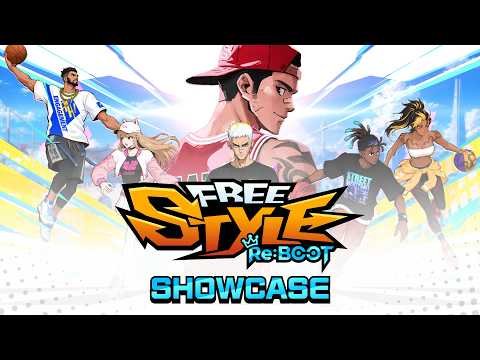

프리스타일: 리부트 사전예약 시작, 추억의 3대3 농구게임이 돌아와요
본 포스팅은 해당 업체로부터 원고료를 지원받아 작성했습니다. 먼저 이 부분부터 밝히고 시작할게요. 초등학교 때 PC방 형들이 밤새 돌리던 3대3 스트리트 농구 게임 하나 기억하시나요. 저도 어릴 때 친구 따라 몇 판 해본 기억이 어렴풋한데, 그 '프리스타일' IP를 조이시티가 새 엔진으로 다시 만든 '프리스타일: 리부트'가 얼마 전 사전예약을 열었더라고요. 아직 정식 출시 전이라 직접 플레이는 못 해봤고, 공식 사전예약 페이지랑 공지·쇼케이스 영상 같은 공개 자료를 바탕으로 정리해본 글이에요.
프리스타일: 리부트, 어떤 게임인가요?
프리스타일: 리부트는 조이시티가 원작 '프리스타일'의 IP를 그대로 이어받아 새 엔진으로 완전히 다시 만든 3대3 실시간 스트리트 농구 온라인 게임이에요. 원작 뼈대는 유지하면서 그래픽·플레이 환경만 요즘 눈높이에 맞게 갈아엎은 셈인데요, 플랫폼은 모바일이 아니라 PC 온라인(Windows)으로 확인됐고, 세계관·콘셉트도 원작의 길거리 농구 감성을 그대로 살리는 방향이라고 해요.
쇼케이스 영상에서 어떤 소식이 나왔나요?
공식 채널이 '프리스타일: 리부트 | 쇼케이스 최.초.공.개'라는 제목으로 첫 공개 영상을 올리며 리부트의 실제 모습을 처음 알렸어요. 세세한 장면까지 다 뜯어보진 못했지만, 어떤 그래픽으로 돌아오는지 궁금하신 분들은 아래 링크로 직접 확인해보시는 게 가장 빠를 것 같아요.

공식 채널에 올라온 쇼케이스 공개 영상이에요. 자세한 장면은 직접 영상으로 보시는 게 가장 정확해요.
이미지 출처: 유튜브 '프리스타일: 리부트' 공식 채널
여기에 더해 조이시티는 2026년 7월 20일 공식 공지로 '다시 뛰는 심장, 프리스타일 리부트가 돌아옵니다'라는 소식도 전했는데요, 원작 고유의 느낌은 그대로 담아내면서 그래픽·시스템만 트렌디하게 개선했다는 게 골자예요. 공식 유튜브(FreeStyleReboot)랑 인스타그램(@freestyle_reboot)에서도 소식을 계속 올리고 있으니 관심 있으신 분들은 팔로우해두시면 좋을 것 같아요.
원작 프리스타일, 그리고 대만에서 먼저 검증한 이유는?
대만·홍콩·마카오에 리부트를 먼저 내놓은 건 국내 정식 출시 전에 게임성을 미리 검증해보려는 목적이었다고 해요. 원작 '프리스타일'은 2004년 12월 국내에서 정식 서비스를 시작해 20년 넘게 이어온 조이시티의 대표 스포츠 IP인데요, 길거리 농구를 소재로 한 3대3 대전에 개성 있는 캐릭터·기술 연출을 얹어 오랫동안 사랑받아온 게임이에요. 이 리부트는 2026년 5월에 현지 퍼블리셔 해피툭(HappyTuk)을 통해 대만·홍콩·마카오에 먼저 출시됐는데, 다만 구체적인 순위·다운로드 수치는 공개된 게 없어 단정은 어렵고요.
조이시티 전현규 프리스타일 사업본부장이 직접 밝힌 계획을 보면, 원작의 재미는 그대로 지키면서 편의성을 더 다듬었고 정식 출시 시점엔 안정적이고 공정한 플레이 환경을 갖추는 걸 목표로 하며, 국내 서비스를 시작으로 중국 등 글로벌 시장에도 순차적으로 서비스를 넓혀갈 계획이라고 해요. 원작을 오래 기억하는 분이라면 이번 리부트가 검증받고 오는 느낌이라 믿음이 좀 더 갈 수도 있겠어요.
리부트에서 달라진 점은 뭔가요?
가장 크게 달라진 건 신규 엔진으로 그래픽·캐릭터 애니메이션·플레이 환경을 전면 갈아엎었다는 거예요. 밸런스 방향도 아이템 능력치보다 조작 실력·판단력·팀워크 쪽에 더 무게를 싣는 쪽으로 설계했다고 하는데, 과금템이 세면 무조건 이긴다기보다 순수하게 붙어서 이기는 재미를 살리겠다는 뜻으로 보여요. 포지션 이름은 원작 그대로 이렇게 나뉘어요.
- 슈팅가드(슈가)
- 포인트가드(포가)
- 스몰포워드(슾·스포)
- 파워포워드(팝·파포)
역할군을 크게 묶어서 부를 땐 빅·스코어러·메이커라고도 한다더라고요. 관전·리플레이 기능은 리부트에서도 이어서 지원한다고 해요.
새 엔진으로 바뀐 코트·캐릭터 애니메이션을 보여줄 자리예요.
사전예약은 어떻게 하나요? 보상은요?
사전예약은 공식 페이지에서 휴대폰 번호를 입력하고 필수 동의만 하면 끝나요. 기간은 2026년 7월 15일부터 8월 12일까지고, 정식 출시일은 8월 13일로 확정됐어요.
참여할 땐 만 14세 이상 등 필수 동의 항목 몇 가지를 체크해야 하는데, 어려운 절차는 아니고 페이지 안내대로 따라가시면 됩니다. 보상은 정식 출시 이후에 지급되는데, 목록은 이래요.
- 포인트 30,000
- 완전한 일반 상자 열쇠 10개
- 완전한 강화 상자 열쇠 5개
- 완전한 생성 상자 열쇠 5개
- 좋아요 러쉬(장식 아이템)
여기에 더해 공식 SNS 팔로우 이벤트도 함께 열려 있는데, 이건 혼자 참여해서 받는 개인 미션이 아니에요. 한국 공식 SNS 계정들의 합산 팔로워 수가 목표 단계에 도달해야 그 단계까지의 보상이 누적으로 풀리는 방식이라, 관심 있으시면 공식 계정부터 팔로우해두시는 게 좋겠어요.
휴대폰 번호 입력하고 동의 체크하는 신청 화면을 캡처해서 넣으면 좋을 자리예요.
자주 묻는 질문
Q. 프리스타일: 리부트, PC 말고 모바일로도 할 수 있나요?
아니요, 지금까지 나온 정보로는 Windows PC 온라인으로만 서비스되고, 모바일판 소식은 따로 없어요.
Q. 사전예약 보상은 언제, 어떻게 받나요?
정식 출시일인 8월 13일 이후에 게임 안 우편함으로 들어와요. SNS 팔로우 이벤트 보상도 마찬가지로 출시 후 우편함으로, 계정당 한 번만 지급된다고 안내돼 있어요.
Q. 이 게임, 확률형 아이템 있나요?
네, 보상으로 나오는 상자·열쇠류 아이템에 확률형 요소가 포함돼 있어요. 참고하고 즐기시면 좋겠어요.
예전에 프리스타일 즐기셨던 분이라면 이번 기회에 사전예약 한 번 걸어두고 8월 13일 출시일을 달력에 표시해두시는 것도 좋을 것 같아요. 저도 쇼케이스 영상부터 다시 챙겨보면서 출시일까지 기다려볼게요.
참고한 곳
· 프리스타일: 리부트 사전예약 공식 페이지
· 공식 공지 "다시 뛰는 심장, 프리스타일 리부트가 돌아옵니다"
· 공식 쇼케이스 영상